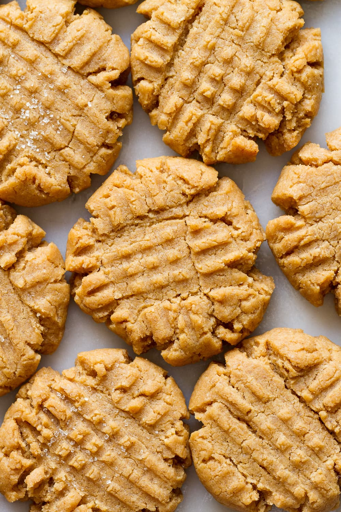
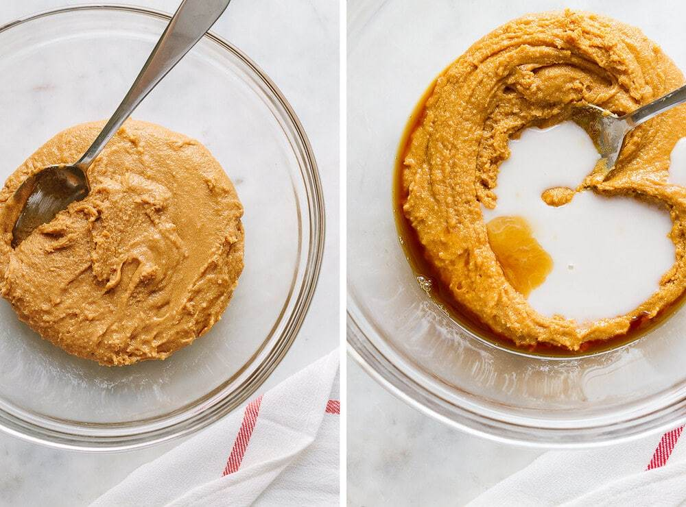

Sample Imagery
 
Vegan Peanut Butter Cookies
Recipe by The Simple Veganista
This cozy homemade recipe is so easy that you’ll probably memorize it and make it again and again. Dairy and egg-free, it’s my all-time favorite peanut butter cookies!
Prep Time: 10 min Cook Time: 15 min Yield: 20-14 cookies
-
1 cup natural peanut butter (270g), creamy or crunchy (or almond butter)
1 cup coconut sugar or pure cane sugar* (192g)
6 tablespoons almond milk, room temp
2 teaspoons vanilla extract
1 cup flour (120g), spelt, unbleached all-purpose, almond flour, or 1-1 gluten-free blend
1 teaspoon baking soda**
A generous pinch of mineral salt (only use if nut butter is unsalted)
*Reduce the sugar to ¾ cup for a less sweet cookie. It’s just as delicious!
**If you don’t have baking soda on hand, baking powder works great too. I tested many batches and they were just fine.
Instructions
Makes 20 – 24 cookies.
Store: Cookies can be stored in an airtight container on the counter for 5 days. They do well loosely covered on the counter for 2 – 3 days as well. To keep longer, store in the refrigerator for up to 2 weeks.
To freeze: Let cookies cool completely, store in freezer safe container for up to 2 months.